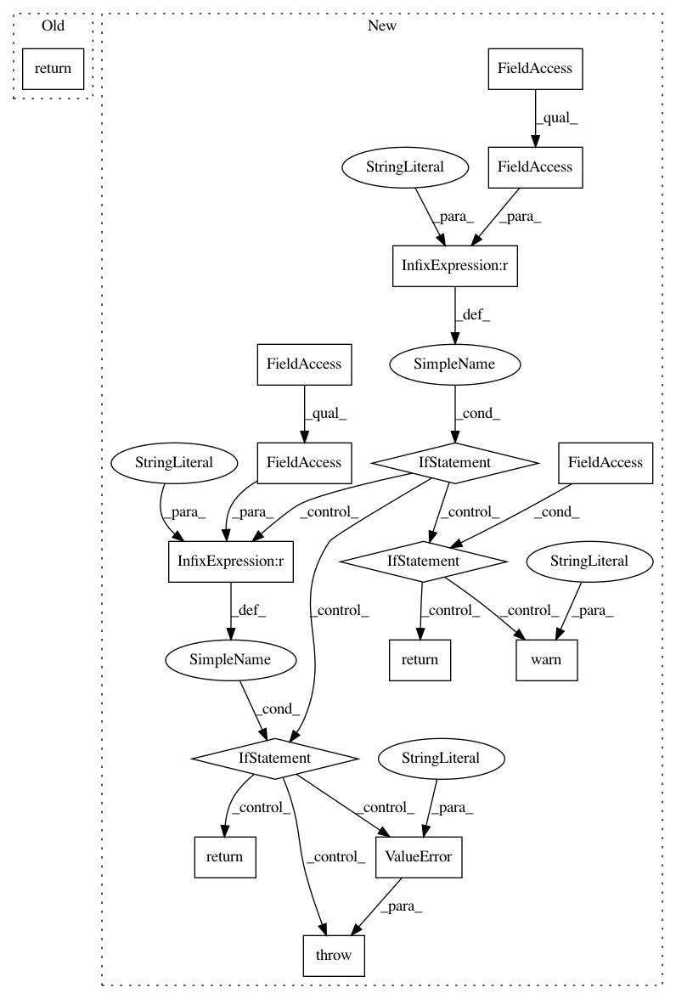

b776ae08e9e676435c5cf8d1f31a86dfd3e1897f,chainercv/utils/image/read_image.py,,read_image,#Any#Any#Any#,5
Before Change
if img.ndim == 2:
// reshape (H, W) -> (1, H, W)
return img[np.newaxis]
else:
// transpose (H, W, C) -> (C, H, W)
return img.transpose((2, 0, 1))
After Change
Returns:
~numpy.ndarray: An image.
if chainer.config.cv_read_image_backend == "cv2":
if _cv2_available:
return _read_image_cv2(path, dtype, color)
else:
warnings.warn(
"Although `chainer.config.cv_read_image_backend == "cv2"`, "
"cv2 is not found. As a fallback option, read_image uses "
"PIL. Either install cv2 or set "
"`chainer.config.cv_read_image_backend = "PIL" to suppress "
"this warning.")
return _read_image_pil(path, dtype, color)
elif chainer.config.cv_read_image_backend == "PIL":
return _read_image_pil(path, dtype, color)
else:
raise ValueError("chainer.config.cv_read_image_backend should be "
"either "cv2" or "PIL".")
In pattern: SUPERPATTERN
Frequency: 3
Non-data size: 16
Instances
Project Name: chainer/chainercv
Commit Name: b776ae08e9e676435c5cf8d1f31a86dfd3e1897f
Time: 2018-10-20
Author: yuyuniitani@gmail.com
File Name: chainercv/utils/image/read_image.py
Class Name:
Method Name: read_image
Project Name: chainer/chainercv
Commit Name: 44edfba78536668c2240e8e722029741a547bd9a
Time: 2018-11-20
Author: yuyuniitani@gmail.com
File Name: chainercv/transforms/image/rotate.py
Class Name:
Method Name: rotate
Project Name: chainer/chainercv
Commit Name: b776ae08e9e676435c5cf8d1f31a86dfd3e1897f
Time: 2018-10-20
Author: yuyuniitani@gmail.com
File Name: chainercv/transforms/image/resize.py
Class Name:
Method Name: resize